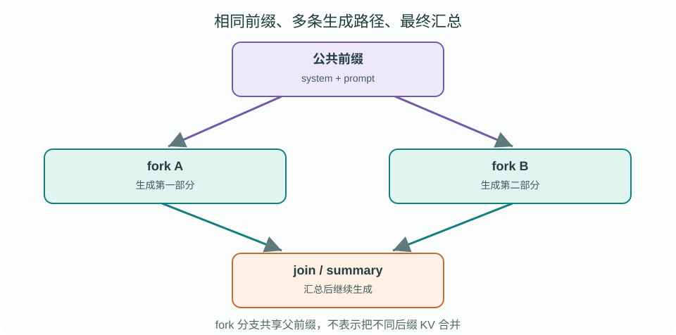
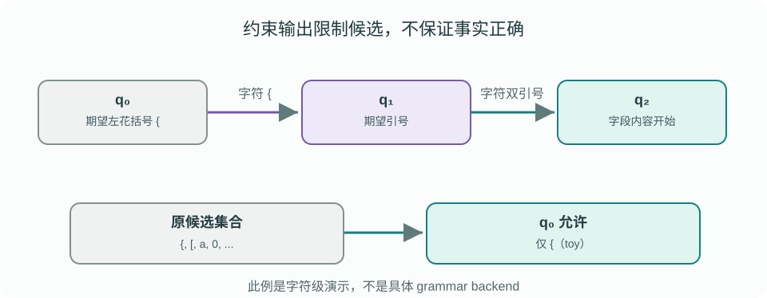

第 04 章 · 语言程序
SGLang Frontend：fork/join、Grammar 与结构化输出
让程序依赖图变得可见：共享父前缀、并行分支以及受限的下一个 token 候选。
当一次 LLM 任务不再只是“发一个 prompt，等一段回答”，而是拆成多个生成步骤、并行分支和结构化输出时，前端控制流会改变推理引擎看到的请求形态。SGLang 的原始工作把语言程序与运行时优化联系起来。
读完本章，你应该能
- 把多阶段语言模型程序画成带依赖的 DAG。
- 区分父前缀 KV 复用与多个分支输出的结果汇总。
- 写出受限候选的概率归一化，并识别 Grammar 的能力边界。
1. 传统单次 Prompt 难以描述哪种问题？
假设用户要求“分别解释两种方案，再给出比较”。顺序构造可以先生成方案 A，再生成方案 B，然后总结；另一种构造是共享 system/user 前缀后分别生成 A/B，最后汇总。两种程序的语义依赖不同，服务的吞吐特征也不一定相同。
原始 SGLang 论文 将结构化语言模型程序与运行时联系起来，讨论了控制流、并行和前缀 KV 复用。前端生成任务与推理后端是不同角色：Python 控制流描述“什么先、什么后”，runtime 决定请求如何排队、复用缓存与执行。
2. fork/join 的结构为何适合图解？
把“共同系统提示 → 两次独立生成 → 汇总”画成有向无环图，才能辨认哪些 token 前缀共享，哪些输出必须等待分支完成。Fork 出来的请求可能复用父 token 前缀的 KV；join 合并的是分支产生的文本/结果，而不是把两套互异 KV 直接焊在一起。

共享前缀对 KV 的收益依赖 tokenizer、模型/适配器和缓存状态。fork 结构提供并行机会，但不保证在单个 GPU 上出现线性加速。
3. 以教学伪代码理解 frontend 的两个职责
官方 Frontend Tutorial 展示了 @function、gen、s.fork 与运行端点配置。下面的代码是帮助读者辨认程序依赖的伪代码，不是可直接复制运行的完整服务。
# 伪代码：仅展示依赖图，不是完整可运行的 SGLang API
context = system_prompt + user_question
branch_A = generate(context + "方案 A")
branch_B = generate(context + "方案 B")
# branch_A / branch_B 在条件允许时可并行
summary = generate(context + branch_A + branch_B + "总结")现实的 frontend 代码涉及后端连接、模型模板、变量命名、批量执行、返回值处理。应直接使用版本匹配的官方接口教程；不要把上述伪代码当作现成 API。
4. 为什么约束生成需要“状态”，而不是事后修 JSON？
设目标格式为一个很小的 JSON 对象。当输出到 { 时，下一位置应该使用能继续构成有效结构的符号；处于字段名、冒号、字符串值阶段时，可用候选集合都不同。状态机/grammar 将生成历史映射到当前合法候选集合，从采样前收缩搜索空间。

原始论文还讨论了压缩有限状态机优化。今天的生产实现可能使用其他 grammar 后端，不应把 2024 年的所有算法细节当作当前默认选项。
5. 受限采样的数学形态与空集合边界
令 p(v|h) 是给定历史 h 的原始 token 分布，A(q) 是状态 q 下的允许 token 集合。若这些 token 的概率质量和大于零，受限分布可写成：
这是合法候选重归一化的教学抽象，并非任何具体 grammar kernel 的精确执行步骤。若允许集合为空或概率质量为零，分母为零，分布未定义；不得随意解禁非法 token。token 跨越语法边界时以 tokenizer-aware matcher 判断；额外 top-k/top-p、temperature 和返回 logprob 的区别见 第46章。
6. 交互：状态决定合法下一字符（仅 Toy）
切换不同状态，观察合法的下一字符为什么不同；这些字符不是实际 tokenizer 的 token ID。
有限状态约束
q₀：输出刚开始；在这个简化语法中只允许“{”，而不允许普通字母。
q₁：已输出“{”；在这个简化语法中期待字段名的开始引号，未到字段值。
q₂：进入字段串后可允许字段内容字符，直到遇到结束引号；合法集合与 q₀、q₁ 不同。
真实部署仍应对模型输出进行 JSON 解析、schema 验证、业务合法性检验和访问授权。约束生成不能证明生成的事实正确。
7. 前端 DSL 的价值与版本边界
前端语义提高表达结构的能力；运行时前缀缓存和 batching 才将结构转化为潜在资源收益。多个分支可能并行调度，但具体执行取决于 GPU 算力、KV 空间、后端 worker 和负载。分支越多不一定越快，频繁小请求还可能增加调度成本。
生产注意：不应把模型选择的工具名称直接等价于权限授予。工具参数需要校验，执行操作应由外部安全边界授权；grammar 只解决输出形式的一部分。
下一章从单个 worker 转向多实例部署：如果 Prefill 和 Decode 在不同 GPU 上执行，KV 该如何跨设备流转？
参考资料与版本边界
论文中的 2024 年设计不代表所有后续默认行为；源码链接固定到 0a8693fbe3a2（2026-11-23），需在升级后重新核对。示例状态与时间线不属于性能实测。